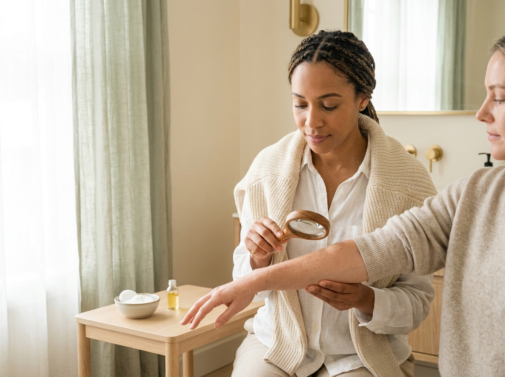

Ihre Hautgesundheit verdient Zeit, Sorgfalt und echtes Vertrauen
In der AUREA Praxis verbinden wir medizinische Dermatologie, ästhetische Medizin und einen modernen Longevity-Ansatz – persönlich, diskret und individuell auf Sie abgestimmt. Für Ihr Anliegen nehmen wir uns bewusst Zeit.
Medizinische Kompetenz und ästhetisches Feingefühl – alles unter einem Dach
Von der medizinischen Abklärung über die Vorsorge bis zur ästhetischen Behandlung erhalten Sie bei uns das gesamte Spektrum der modernen Dermatologie – aufeinander abgestimmt und aus einer Hand.

01
Medizinische Dermatologie
Akne, Ekzeme, Rosazea, Schuppenflechte oder Allergien: Wir klären die Ursache fundiert ab und behandeln sorgfältig nach aktuellem medizinischem Standard – verständlich erklärt und auf Sie abgestimmt.
Mit modernster Auflichtmikroskopie untersuchen wir Ihre Haut und Ihre Muttermale sorgfältig. Früherkennung schafft Sicherheit – und ist die Grundlage für langfristig gesunde Haut.
Sanfte, natürliche Behandlungen, die Ihre Ausstrahlung unterstreichen – mit ärztlichem Augenmass statt Schablone. Wir beraten Sie ehrlich, zurückhaltend und ohne Versprechen.
Moderne Laser- und Geräteverfahren für Hautbild, Gefässe, Pigmente und Hauterneuerung. Jede Anwendung stimmen wir individuell auf Ihren Hauttyp und Ihr Ziel ab.
Ein vorausschauender Ansatz für langfristig gesunde Haut: Wir betrachten Hautalterung im Zusammenhang mit Lebensstil, Prävention und Ihrer persönlichen Hautbiografie.
Wir nehmen uns Zeit für ein ausführliches Gespräch, erklären verständlich und begleiten Sie über die einzelne Behandlung hinaus – als verlässliche Ansprechpartnerin an Ihrer Seite.
Longevity bedeutet für uns, Ihre Hautgesundheit langfristig zu denken – statt nur das Symptom von heute zu behandeln. In einer ausführlichen Anamnese betrachten wir Ihre Haut im Zusammenhang mit Lebensstil, Schutz und Vorsorge. So entsteht ein Plan, der zu Ihrem Leben passt und Bestand hat.
Ganzheitliche Hautanalyse und persönliche Hautbiografie
Prävention und gezielter Schutz vor vorzeitiger Hautalterung
Individuell abgestimmte Pflege- und Behandlungsstrategie
Dr. med. Carla Brunner führt die AUREA Praxis mit einer klaren Haltung: medizinische Sorgfalt, ehrliche Beratung und echte Zeit für den Menschen. Ästhetik verstehen wir als feine Ergänzung der Medizin, nie als Versprechen. Im Mittelpunkt stehen Ihr Vertrauen und Ihr persönliches Anliegen.
Fachärztin für Dermatologie & Venerologie FMH
Über 15 Jahre Erfahrung in Klinik und Praxis
Spezialisierung in Hautkrebs-Vorsorge und ästhetischer Medizin
Regelmässige Fort- und Weiterbildung nach aktuellem Standard
Mitglied der Schweizerischen Gesellschaft für Dermatologie
«Gute Hautmedizin beginnt mit Zuhören. Ich möchte verstehen, was Sie beschäftigt – und Sie ehrlich und auf Augenhöhe beraten.»
Dr. med. Carla Brunner
So arbeiten wir
Ihr Weg zu uns – klar und unkompliziert
01
Anfrage
Stellen Sie unverbindlich eine Terminanfrage – telefonisch oder über das Formular. Wir melden uns zeitnah und diskret bei Ihnen zurück.
02
Erstgespräch & Anamnese
In Ruhe besprechen wir Ihr Anliegen, Ihre Vorgeschichte und Ihre Ziele. Eine sorgfältige Untersuchung bildet die Grundlage für alles Weitere.
03
Individueller Behandlungsplan
Sie erhalten eine verständliche, ehrliche Einschätzung und einen auf Sie abgestimmten Plan – mit transparenter Information zu Ablauf und Kosten.
04
Behandlung & Begleitung
Wir behandeln Sie sorgfältig und begleiten Sie darüber hinaus. Kontrolltermine und Nachsorge gehören für uns selbstverständlich dazu.
Stimmen unserer Patientinnen und Patienten
Vertrauen, das aus Sorgfalt wächst
★★★★★
«Endlich eine Ärztin, die sich wirklich Zeit nimmt und nichts über meinen Kopf hinweg entscheidet. Ich habe mich von Anfang an gut aufgehoben gefühlt.»
S
Sandra M.
Patientin seit 2022
★★★★★
«Die Beratung war ehrlich und zurückhaltend – mir wurde nichts aufgeschwatzt. Genau das schafft Vertrauen.»
T
Thomas R.
Patient seit 2021
★★★★★
«Vom Empfang bis zur Behandlung wirkt alles ruhig, professionell und diskret. Man spürt die Sorgfalt in jedem Detail.»
B
Beatrice K.
Patientin seit 2023
★★★★★
«Die jährliche Hautkontrolle gibt mir ein gutes Gefühl der Sicherheit. Alles wird verständlich erklärt.»
M
Markus H.
Patient seit 2020
Häufige Fragen
Gut zu wissen
Medizinisch notwendige dermatologische Leistungen werden in der Regel über die Grundversicherung abgerechnet. Ästhetische und longevity-orientierte Behandlungen sind Selbstzahlerleistungen. Vor jeder Behandlung informieren wir Sie transparent über die zu erwartenden Kosten.
Am einfachsten stellen Sie eine Anfrage über das Kontaktformular oder telefonisch. Wir melden uns zeitnah zurück und finden gemeinsam einen passenden Termin. Für dringende medizinische Anliegen bemühen wir uns um eine rasche Lösung.
Im Erstgespräch nehmen wir uns Zeit für Ihr Anliegen, Ihre Vorgeschichte und Ihre Ziele. Nach einer sorgfältigen Untersuchung besprechen wir gemeinsam die sinnvollen nächsten Schritte – ohne Druck und in Ruhe.
Diskretion ist für uns selbstverständlich. Ihre Daten behandeln wir vertraulich und nach den geltenden Schweizer Datenschutzbestimmungen. Gespräche und Behandlungen finden in geschütztem, ruhigem Rahmen statt.
Medizinische Dermatologie behandelt Erkrankungen und Beschwerden der Haut. Ästhetische Medizin unterstreicht Ihre natürliche Ausstrahlung. Beides geht bei uns Hand in Hand – immer mit ärztlichem Augenmass und ohne Versprechen.
Unsere Praxis liegt zentral an der Bahnhofstrasse 12 in 6430 Schwyz und ist mit öffentlichen Verkehrsmitteln gut erreichbar. In unmittelbarer Nähe stehen Parkmöglichkeiten zur Verfügung. Gerne nennen wir Ihnen die nächstgelegenen Parkplätze.
Kontakt & Terminanfrage
Geben Sie Ihrer Haut die Aufmerksamkeit, die sie verdient
Stellen Sie unverbindlich eine Terminanfrage – wir melden uns diskret und zeitnah bei Ihnen.